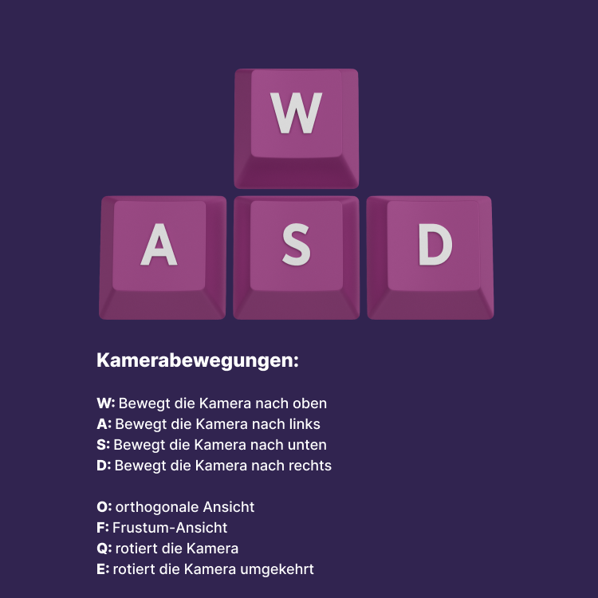

EA 5 - Kamerabewegung
Interaktion
Rekursionseinstellung:
Stellen Sie mit den Ziffern von 0 bis 7 die Rekursionsstuffen des Kugels in der Mitte ein:
Die Bewegung der „kreisenden“ Kamera erfolgt über die Pfeiltasten auf Kreisbahnen.
Kamerabewegungen:
W: Bewegt die Kamera nach oben
A: Bewegt die Kamera nach links
S: Bewegt die Kamera nach unter
D: Bewegt die Kamera nach rechts
O: Orthogonale Ansicht
F: Frustum-Ansicht
Q: Rotiert die Kamera
E: Rotiert die Kamera umgekehrt